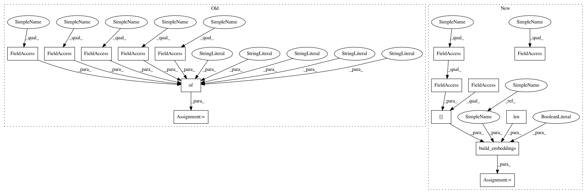

13bbee615c87c812ddcfff73746cd504222e3fb0,onmt/Models.py,,make_base_model,#Any#Any#Any#Any#Any#,561
Before Change
break
feature_vocabs.append(fields[key].vocab)
emb_opts = {"src_word_vec_size": model_opt.src_word_vec_size,
"position_encoding": model_opt.position_encoding,
"feat_merge": model_opt.feat_merge,
"feat_vec_exponent": model_opt.feat_vec_exponent,
"feat_vec_size": model_opt.feat_vec_size}
if model_opt.model_type == "text":
encoder = Encoder(model_opt.encoder_type, model_opt.brnn,
model_opt.rnn_type, model_opt.enc_layers,
After Change
// Make Encoder.
src_vocab = fields["src"].vocab
num_feat_embeddings = [len(feat_dict) for feat_dict in
ONMTDataset.collect_feature_dicts(fields)]
embeddings = build_embeddings(
model_opt, src_vocab.stoi[onmt.IO.PAD_WORD],
len(src_vocab), for_encoder=True,
num_feat_embeddings=num_feat_embeddings)
if model_opt.model_type == "text":
encoder = Encoder(model_opt.encoder_type, model_opt.brnn,
model_opt.rnn_type, model_opt.enc_layers,
model_opt.rnn_size, model_opt.dropout, cuda,
embeddings)
elif model_opt.model_type == "img":
encoder = onmt.modules.ImageEncoder(model_opt)
else:
assert False, ("Unsupported model type %s"
% (model_opt.model_type))
// Make Decoder.
tgt_vocab = fields["tgt"].vocab
embeddings = build_embeddings(
model_opt, tgt_vocab.stoi[onmt.IO.PAD_WORD],
len(tgt_vocab), for_encoder=False)
decoder = onmt.Models.Decoder(model_opt, cuda, embeddings)
In pattern: SUPERPATTERN
Frequency: 3
Non-data size: 15
Instances
Project Name: OpenNMT/OpenNMT-py
Commit Name: 13bbee615c87c812ddcfff73746cd504222e3fb0
Time: 2017-08-30
Author: nasa4836@gmail.com
File Name: onmt/Models.py
Class Name:
Method Name: make_base_model
Project Name: OpenNMT/OpenNMT-py
Commit Name: 13bbee615c87c812ddcfff73746cd504222e3fb0
Time: 2017-08-30
Author: nasa4836@gmail.com
File Name: test/test_models.py
Class Name: TestModel
Method Name: encoder_forward
Project Name: OpenNMT/OpenNMT-py
Commit Name: 13bbee615c87c812ddcfff73746cd504222e3fb0
Time: 2017-08-30
Author: nasa4836@gmail.com
File Name: tools/extract_embeddings.py
Class Name:
Method Name: main
Project Name: OpenNMT/OpenNMT-py
Commit Name: 13bbee615c87c812ddcfff73746cd504222e3fb0
Time: 2017-08-30
Author: nasa4836@gmail.com
File Name: onmt/Models.py
Class Name:
Method Name: make_base_model